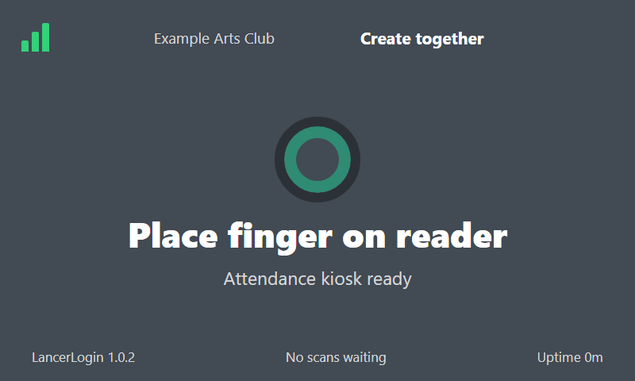

Hardware checklist
- Raspberry Pi 3B+, 4, or 5 with at least 1 GB RAM
- Waveshare 7-inch DSI LCD (E)
- R503 fingerprint reader connected to the Pi UART
- Manual Wi-Fi or Ethernet connection
- 32-bit or 64-bit Raspberry Pi OS and Node.js 18+
Guided installer
- Download
install-lancerlogin.shfrom the matching immutable GitHub release. - Run
sudo bash install-lancerlogin.sh --dry-run. This checks and describes changes without modifying the Pi. - In the Admin dashboard, create a ten-minute pairing code for the named kiosk.
- Run
sudo bash install-lancerlogin.sh --install. Enter the Worker API URL, kiosk name, and one-time code at the prompts. - The installer verifies the release checksum, configures UART, creates a locked-down service user, stores the credential owner-only, starts systemd, and configures installed Chromium to open the local touch UI.
Pairing code
Returned once in the dashboard. D1 stores only its hash and rejects reuse or expiry.
Kiosk credential
Returned only to the Pi. The Pi stores it locally; D1 stores only its hash.
Fingerprint boundary
R503 templates remain inside the sensor. Cloud requests contain member and meeting identifiers, never templates or scans.
Enroll and test locally
Open http://127.0.0.1:8788/ on the Pi. The touch UI tests the reader, enrolls the same finger twice directly into a selected R503 slot, maintains the local slot-to-member mapping, and runs check-in. Enter the visible roster member ID from your imported CSV; only that ID and the slot number are stored in an owner-only Pi file.

Check in
Enter the current meeting ID, then use the large touch target to scan.
Operational status
Pairing, reader, cloud, and offline-queue state stay visible locally.
Enroll locally
The same finger is captured twice and its template remains inside the R503.
Replace a kiosk
LancerLogin supports one active kiosk. The Admin dashboard requires explicit replacement confirmation. The existing kiosk remains active until the replacement code is redeemed; then its credential is disabled.